Monte Sole et l'âme bolognaise
Bologne, Italie, ne laisse pas celles et ceux qui la visitent indifférent·e·s. Belle, impertinente et solidaire, elle a toujors été un bastion de l’humanisme au sein d’un pays souvent séduit par l’extrême droite. Théâtre de nombreux mouvements contestataires, l’isola rossa (l’île rouge) cultive encore son esprit de résistance et l’héritage de ses héros locaux : les partigiani.
Peu de temps après mon arrivée j’ai entendu dire que pour comprendre Bologne il faut d’abord comprendre i colli : ces collines au sud de la ville qui annoncent le début des Appennins. Toujours friand d’occasions pour monter les sacoches sur mon vélo, j’ai décidé de partir aux coulisses de l’âme bolognaise avec une destination en tête : Monte Sole.
De la gare centrale j’ai pu suivre il viale, cette avenue avec un terre-plein centrale ou se pose une double piste cyclable, protégeant ses usagers par une rangée d’arbres de chaque côté. Cette piste suit les contours de l’ancienne enceinte murale de la ville. On trouve encore des morceaux ainsi que neuf des douze anciennes portes intactes. Parmi elles, Porta Saragozza est l’une des plus belles. Elle marque le début des 666 arches du portico de San Luca, drôle de chiffre pour un chemin vers une Basilique.
La via Saragozza est moins agréable à parcourir à vélo. Les voitures garées sur la piste peinte sur la rue sont légion. Heureusement, ce segment est court : moins de 2km après je prends la montée de la Via San Luca.
Via San Luca ne va pas par quatre chemins, elle affiche tout de suite 14% pour les premiers 400 mètres. De quoi faire chauffer les mollets pour les 2km de montée de 10,5% de moyenne, avec des segments à 18%. La montée est néanmoins spectaculaire. Elle longe les arcades, offre des vues magnifiques sur la ville et culmine sur le joyaux architectural de la Basilique de San Luca. À couper le peu de souffle que me reste.
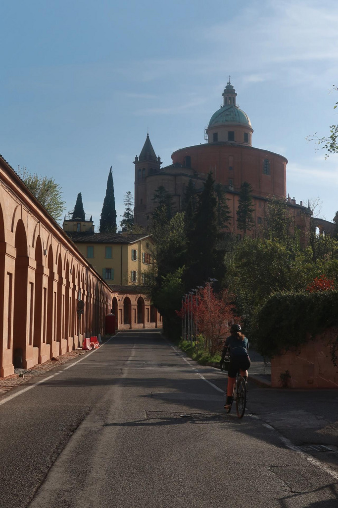
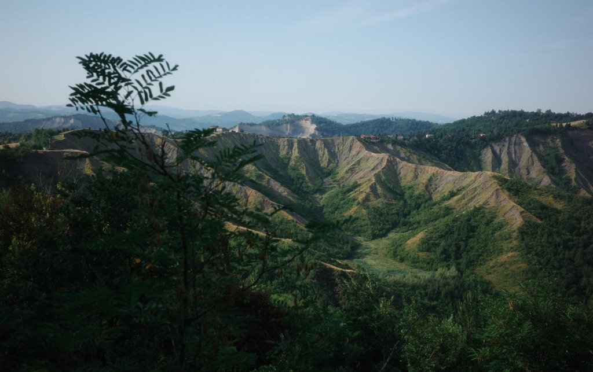
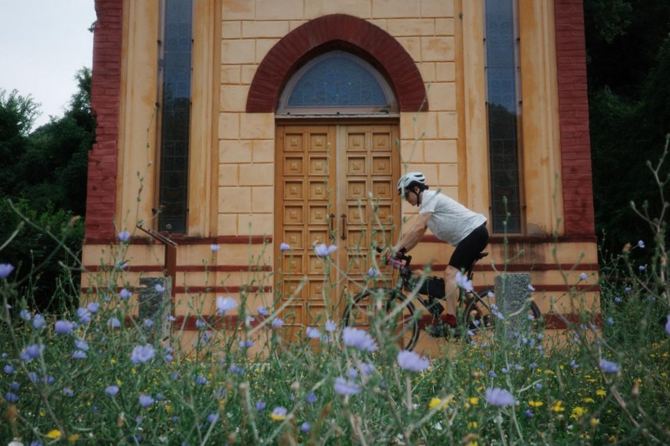
L’après San Luca marque le début des colli. Les montées et descentes entourées de verdure offrent des points de vue qui me donnent envie de m’arrêter constamment et sortir mon appareil photo. Des églises et vignobles parsemés çà et là, des calanques aux allures lunaires et la fenêtre occasionnelle surplombant Bologne qui me rappelle que je suis malgré tout à un jet de pierre d’une ville de presque 400000 habitants ; le dépaysement ici n’est qu’à quelques tours de pédalier. La descente après quelques kilomètres m’emmène à Sasso Marconi, ville natale du célèbre Guglielmo Marconi.
C’est après quelques minutes, en roulant sur la départementale la Porrettana, que j’aperçois le premier indice de ce que la région a témoigné. Un panneau sur la route expose un message simple et percutant : « Souviens-toi ». Quelques minutes plus tard, à Lama di Reno, au pied de Monte Sole, des oeuvres d’art urbain racontent la tragédie qui s’est abattue sur les habitants de la zone.
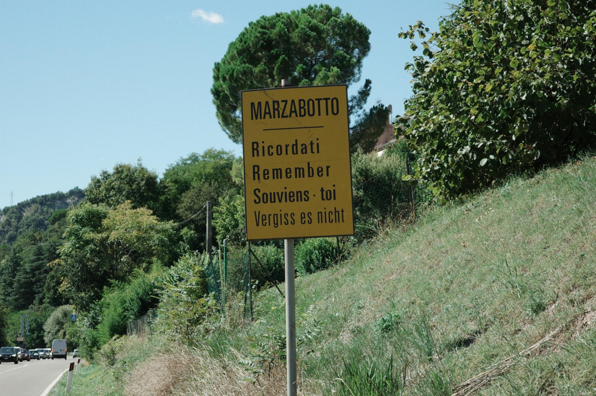
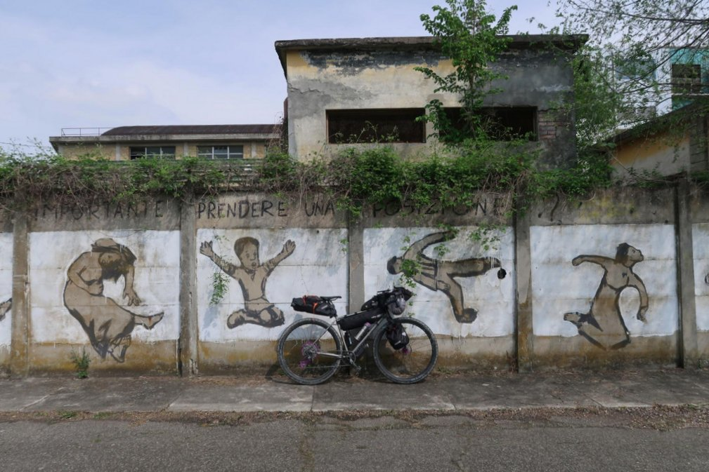
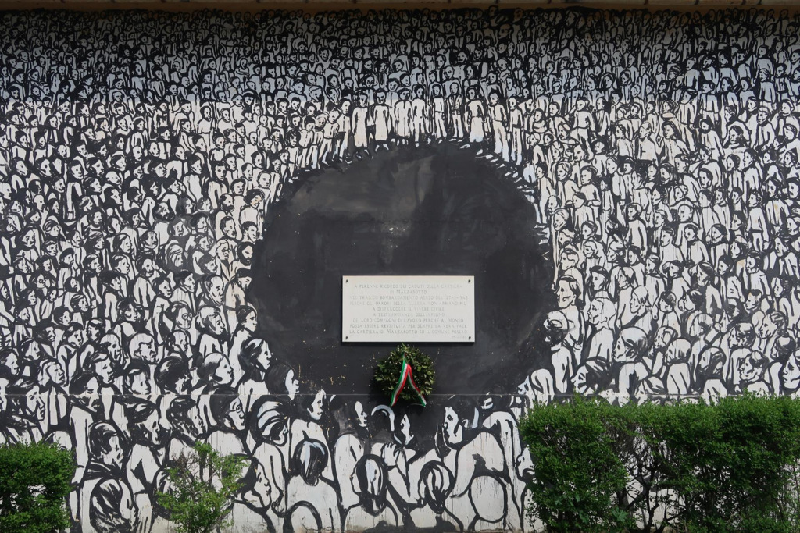
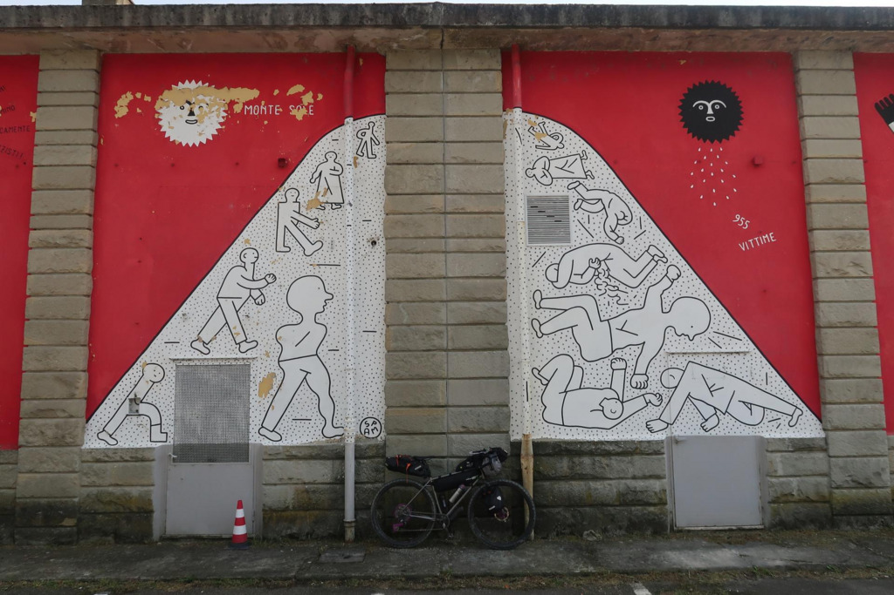
Mais d’abord un peu de contexte.
La prise du pouvoir par Mussolini en 1922 marque le début du ventennio fascista. Les tentatives de résistance ne se sont pas fait attendre et ont pris la forme des activités clandestines menées principalement par des communistes. Mussolini est arrêté en 1943, laissant un boulevard à l’Allemagne nazi qui occupe le nord de l’Italie et met en place un gouvernement collaborationiste. La résistance, elle, n’a pas cessé.
L’endroit où je me trouve a vu naître une de ces brigades résistantes : la Brigata Partigiana Stella Rossa. La plupart des membres venaient des communes autour du Monte Sole et étaient commandés par Mario Musolesi, connu sous le pseudo Il Lupo. Cette brigade autonome était remarquable par son organisation et son efficacité, portant des coups durs à l’arme allemande et italienne via des actes de sabotage et embuscade. Des fresques et hommages à ces héros locaux ornent plusieurs murs autour de moi. Leur présence se fait encore sentir.
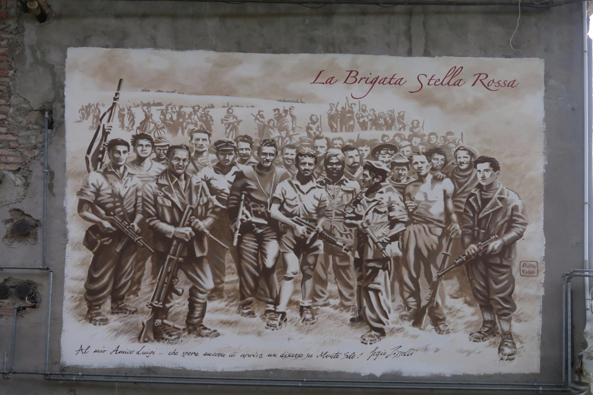
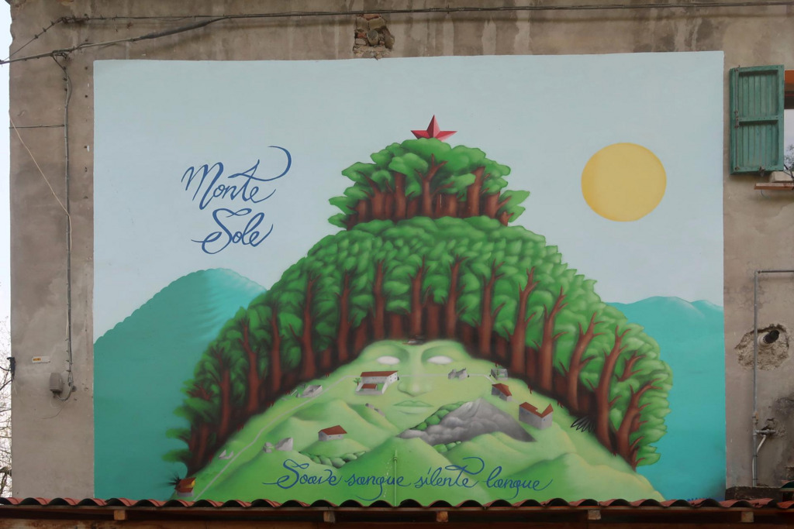
Le 29 septembre de 1944 le massacre le plus meurtrière de l’histoire Italienne se déroule ici : l’eccidio di Marzabotto. Suite aux succès des mouvements de résistance, notamment ceux de la Stella Rossa, l’armée naziste décide d’extérminer toute la population, civile incluse, de la région de Monte Sole. Pendant six jours, l’opération se déroule méthodiquement. Comme lors du massacre d’Oradour-sur-Glane, survenu quelques mois auparavant, les civiles étaient souvent groupés dans des églises ou cimetiers et tués en masse.
Les cicatrices de cette tragédie sont visibles partout : églises en ruines, impacts de balle, monuments aux morts. Elles se dévoilent au fur et à mesure que je grimpe le sentier de terre au dessus de Panico qui mène vers l’église de San Silvestro di Stanzano. Dans le cimetiere à côté j’aperçois une famille, larmes aux yeux, déposant ensemble des fleurs. 80 ans après les larmes coulent encore. 80 ans après des fleurs fraîches ornent les cimetiers.
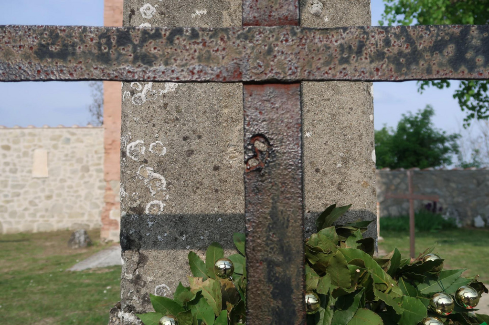
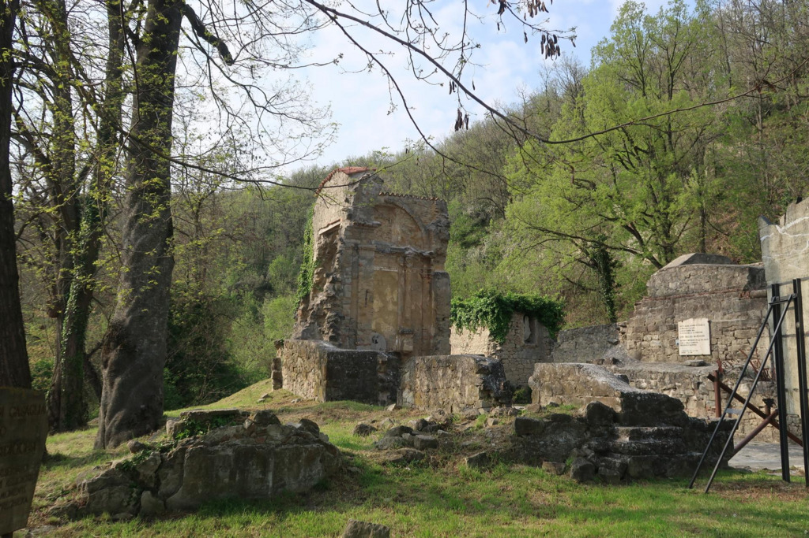
La région est ensuite resté inhabité pendant plusieurs décennies. La nature a peu à peu repris le terrain et des espèces animales absentes jusqu’alors ont fait leur retour. Sangliers, cerfs, renards, et surtout le loup des appennins (une sous-espèce du loup gris) ont tous pris résidence permanente ici. Il n’est d’ailleurs pas difficile de les croiser lors des balades, enfin, sauf l’insaisissable loup qui n’aime pas se laisser apercevoir. Un paneaux signale néanomoins le chemin à parcourir pour maximiser ses chances de voir des empreintes ou autres indices de son passage : la boucle Sulle tracce del lupo.
Je continue à pédaler perdu dans mes pensées lorsqu’un constat purement logistique me fait redescendre sur terre : je n’ai plus d’eau. Je me trouve dans une zone particulièrement peu peuplée et réalise qu’il faudra peut-être continuer pendant plusieurs kilomètres la bouche seche. J’hésite à faire demi-tour pour en demander chez des fermes derrière moi quand, par un énorme coup de chance, j’apperçois une vieille maison avec une fontaine donnant sur l’extérieur. La fontaine a même un nom : La Fontana Luigi. Je ne soupçonnais pas l’histoire folle cachée derrière ce point d’eau.
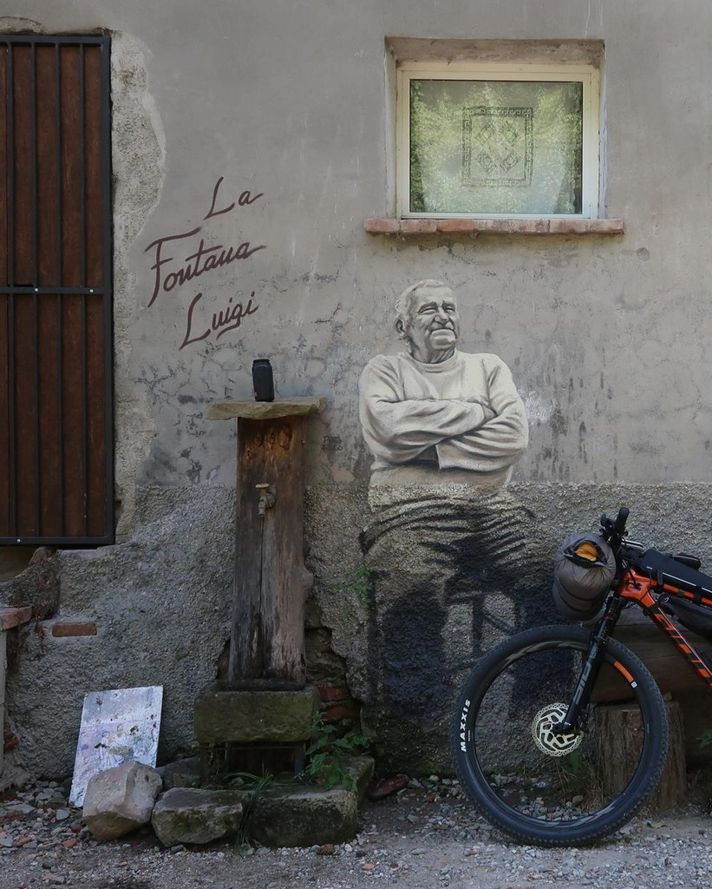
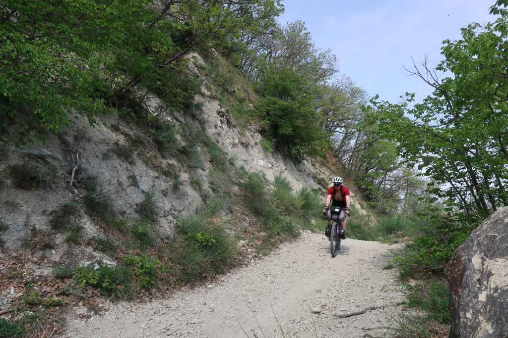
Revenons un instant au 29 septembre 1944, jour du massacre. Franco Fontana, combattant de la brigade Stella Rossa, sauve son frère Sergio et un autre partigiano - tous deux grièvement blessés - en les transportant à pied pendant plusieurs heures hors du champ de bataille et jusqu’à un refuge dans la vallée. Ils survivent le massacre et décident de s’installer à Vado (village limitrophe de Monte Sole) après la guerre.
Le troisième frère, Walter Fontana, retourne du camp de concentration de Dachau ou il fut prisonnier et les rejoint également. Il finit par y fonder une famille dont un des fils s’appelle Luigi. Luigi Fontana.
En 1974 Luigi à 24 ans et prend la décision de démenager de Vado à Monte Sole, devenant ainsi le premier résident permanent depuis la guerre advenue 30 ans auparavant. Après le loup des appennins, c’est l’homme, jusqu’àlors absent, qui décide de revenir sur Monte Sole.
Luigi s’est vite fait connaître. Personne franche et tenace, il n’avait pas peur de ses opinions. Sa porte était toujours ouverte pour accueillir des gens et leur offrir un plat chaud, un lit, ou simplement un lieu pour échanger. Sa générosité est mieux comprise comme le reflet d’un esprit révolutionnaire pour qui le partage est un act politique dans un monde qui pousse à l’individualité. Esprit qui cherchait aussi à faire renaître Monte Sole de ses cendres en refusant que le traumatisme survenu en 1944 devienne la fin de l’histoire.
Une anectode raconte qu’un jour un camper s’est arreté devant lui pour lui demander « où se trouve le monument ? », faisant référence à un éventuel endroit où rendre hommage aux victimes du massacre. Luigi regarda la prairie à côté où des enfants courraient et jouaient et répondit « le voilà le monument ».
Luigi s’est éteint en janvier 2020. Dans sa maison s’érige aujourd’hui une fontaine en son nom avec un fresque le représentant à côté. Même dans l’au-délà, il parvient toujours à aider les passants. Franco Fontana, son père, est mort en 2024, à 95 ans, après avoir dédié sa vie à la lutte politique en faveur des plus démunis et à promouvoir des initiatives pacifistes telles que la Scuola di Pace di Monte Sole.
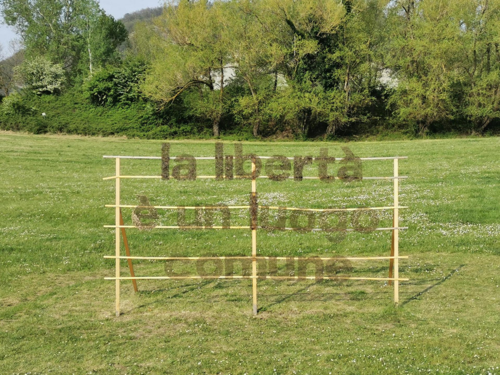
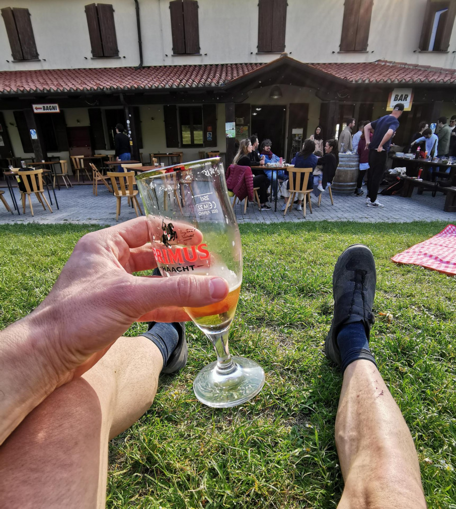
Le chemin finit par m’emmener au refuge Rifugio Re-Esistente Il Poggiolo, où je prévois de bivouaquer. Mais attention, il est reducteur d’appeller cet endroit un simple refuge. Ce poste est un tiers-lieu multifacette : centre d’accueil historique et culturel, lieu d’inclusion, restaurant éthique, arène de concerts, laboratoire d’idées… où l’on peut aussi louer une chambre pour passer la nuit.
Je me rends compte assez vite que je suis dans un lieu idéal de ressourcement et convivialité. Géré en coopérative, il n’y a aucune pression pour consommer quoi que ce soit pour y rester autant que l’on souhaite. On y trouve des jeux, livres, guitarres, terrain de volleyball, douche, et bien d’autres choses mises à disposition gratuitement. Lorsque je demande combien me coutera placer ma tente, on me répond « rien du tout ! ». Le couple assis à côté me demande d’où je viens, m’offre une bière et on papote vélos, voyages, et projets futurs. Sur la pelouse se pose un paneau méatalique où l’on peut lire « La libertà è un luogo comune » (la liberté est un endroit partagé). J’ai rarement eu un tel coup de foudre pour un endroit.
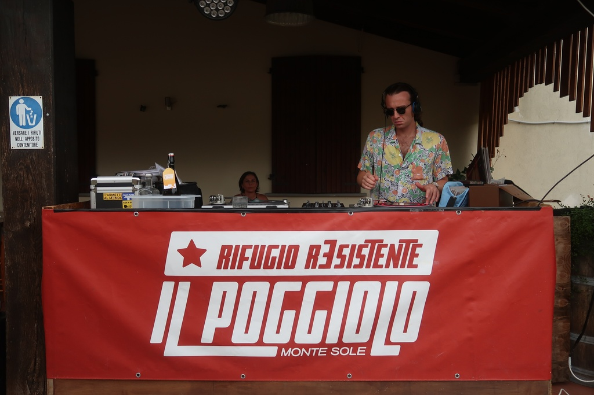
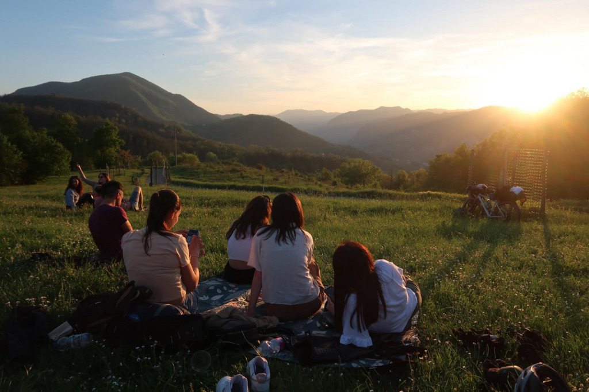
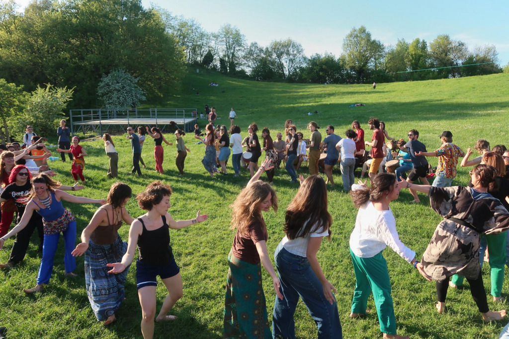
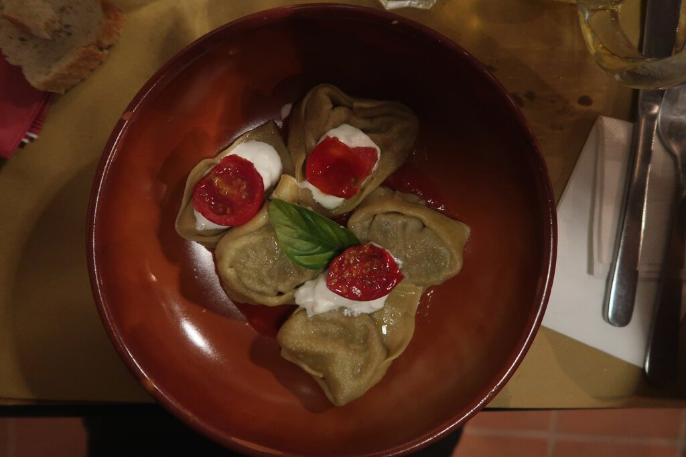
Il Poggiolo s’inscrit dans la continuité de l’initiative de renouveau initiée par Luigi Fontana. Les deux se ressemblent même. Ouvertement antifasciste, résistant et feministe, Il Poggiolo n’a pas non plus peur de ses opinions. Il est aussi motivé par un idéal politique de partage et convivialité en oposition à l’individualisme et la competitivité. Ce n’est pas pour rien que des personnes de toute l’Italie se donnent rendez-vous ici le 25 avril - le jour de la libération de l’occupation fasciste.
Difficile d’imaginer un endroit plus adapté pour finir cette journée. La fatigue commence à se faire sentir. Je n’ai plus qu’a poser ma tente.
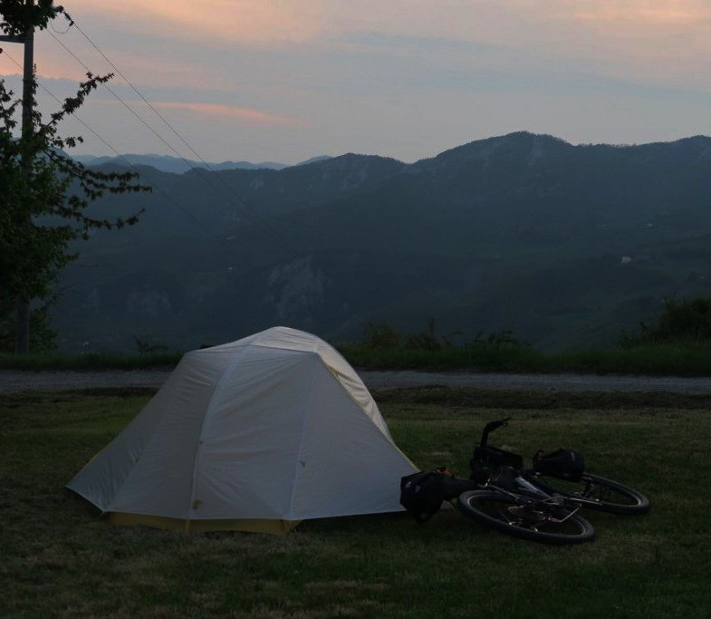
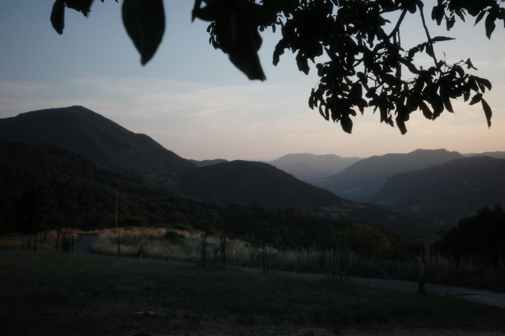
Le jour d’après je décide de faire un saut au sommet de Monte Sole en laissant les sacoches au réfuge. Le montée est pensée pour les randonneurs, le vélo n’est pas à sa place ici. Néanmoins, en le tenant sur l’épaule on ne tarde pas trop à rejoindre le point le plus haut du parc. Un monument aux hommes et femmes de la Stella Rossa y siège.
Je pars ensuite en direction de Grizzana Morandi. Le chemin est parsemé de ruines et mémoriaux qui racontent les histoires d’héroisme et abnégation des habitants lors de l’occupation, le plus souvent au prix de leur vie. Néanmoins, je croise également des structures qui rappellent que Monte Sole est aussi redevenu un espace vivant : des fermes, églises, maisons, et même un camping naturiste se mêlent aux points de vue prenants sur les montagnes.
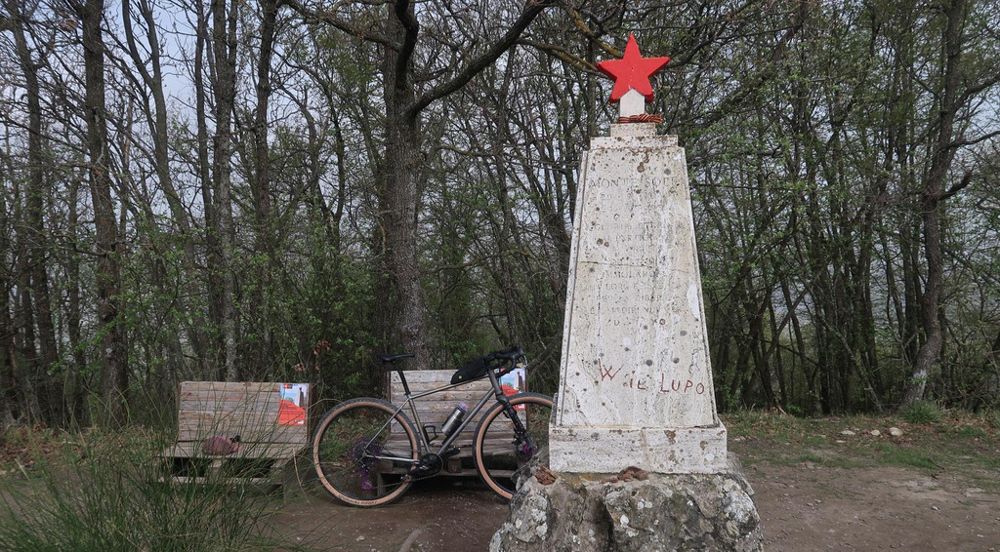
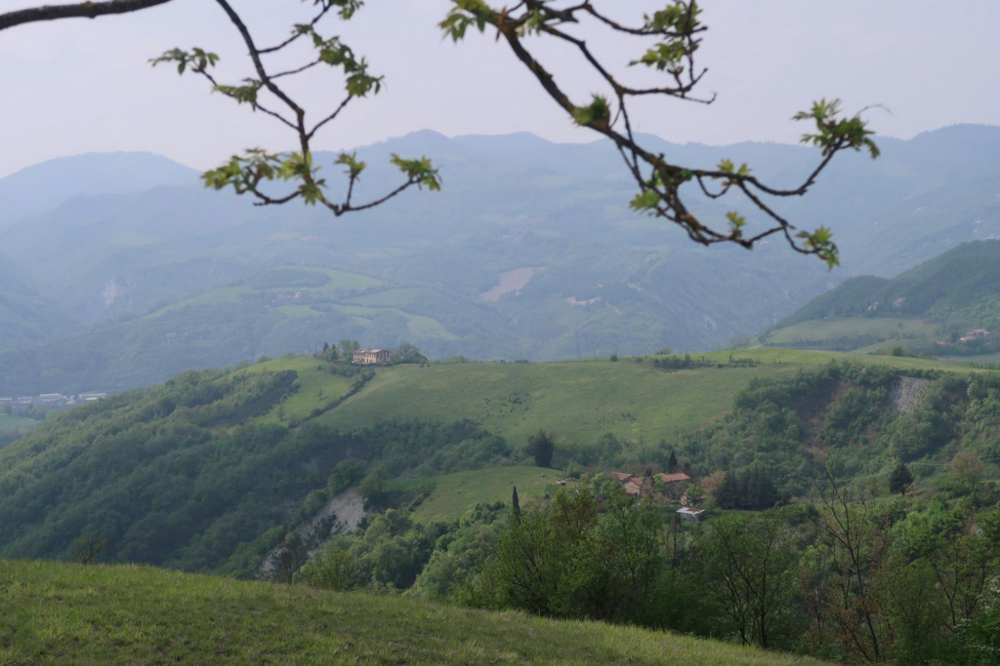
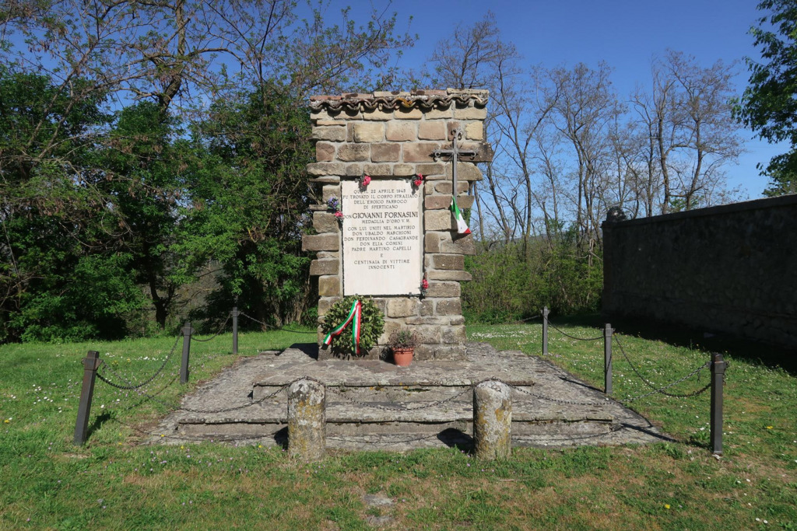
Le dernier village avant la descente vers la vallée est Grizzana Morandi. Comme pour Sasso Marconi, le « Morandi » dans le nom fait référence à une personne célébre : Giorgio Morandi. Ce peintre bolognais séjournait souvent dans sa maison d’été à Grizzana et y a produit une part importante de ses oeuvres.
La mairie se dresse au milieu du village avec une seule phrase écrite dans sa façade : Art. 11 L’Italia ripudia la guerra (l’Italie répudie la guerre). Ce sont les premiers mots de l’article 11 de la constitution Italienne :
L’Italie répudie la guerre comme moyen d’attenter à la liberté des autres peuples et comme mode de solution des différends internationaux ; elle consent, dans des conditions de réciprocité avec les autres États, aux limitations de souveraineté nécessaires à un ordre qui assure la paix et la justice entre les Nations ; elle suscite et favorise les organisations internationales qui poursuivent un tel objectif.
Ça m’interpele car je suis plutôt habitué à des symbols de puissance et même d’intimidation dans les batiments officiels autour du monde. Le choix de mettre en avant un article de la constitution pronant la paix - même au prix de la souveraineté - reflète l’état d’esprit de la région post-guerre, lors que le pays se trouvait dans un carrefour existentiel.
À la suite de la chute du régime fasciste il a fallu mener une transition vers un nouveau régime démocratique. Dès 1945, une assemblée consultative de membres de la résistance est mis en place pour poser les fondements, incluant un référendum sur la nature du régime (république ou monarchie) ainsi que l’extension du droit du vote pour les femmes. La république l’a emporté, et la constitution a été adopté peu après, avec le fameux article 11.
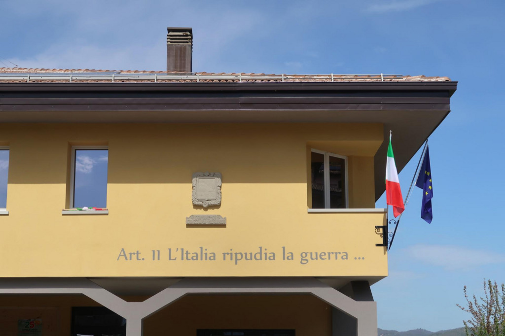
À côté se trouve le bar la Pina, un café/bar/restaurant géré en famille et nommé ainsi en honneur de leur nonna. Avant d’y entrer je demande à trois messieurs assis dans les tables à l’extérieur de jeter un coup d’oeil à mon vélo le temps que je prends mon second café de la journée. L’un d’eux, en rigolant, me dit qu’il n’y a pas de quoi s’inquiéter ici : il laisse toujours les clés de sa voiture dans le contact pour ne pas les perdre. Mes habitudes de citadin m’ont trahi.
Avant de descendre dans la vallée je repasse par la place de la mairie. Il y a un petit marché avec un vendeur de fruits et légumes à qui j’essaie d’acheter une banane. Il refuse de me la faire payer et me souhaite bonne route. Il y a un côté hors-du-temps de cet endroit et des intéractions avec ses habitants.
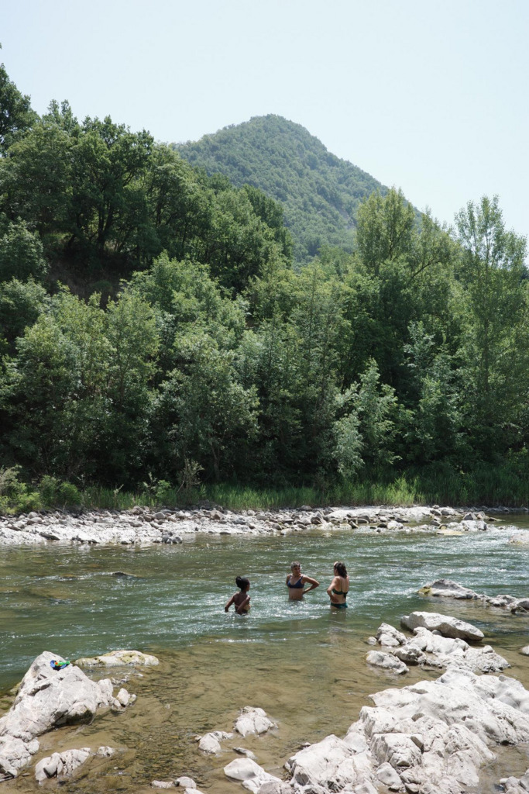
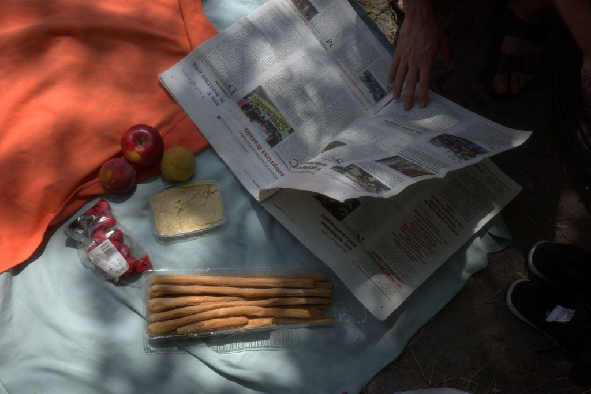
Faute de pouvoir suivre les pas de Luigi Fontana et de rester indéfiniment à Monte Sole, je descends de Grizzana Morandi vers Vergato, pour ensuite suivre la rivière Reno en direction de Bologne. En faisant des petits détours par les chemins bordeant l’eau je remarque plusieurs spots de baignade en plein millieu de la nature. Le cadre est idéal et deviendra une de mes destinations préférées pour échaper à la chaleur estivale.
Le retour se fait dans la douceur. Je fais bien moins de dénivelé que la première journée et les chemins non-goudronnés sont beaucoup moins techniques. Je croise des restaurants, cafés et points d’eau plus souvent également.
Quelques heures après j’arrive au Parco della Chiusa qui marque officiellement le retour à Bologne. Le parc se mele à la forêt pour offrir un doux retour en introduisant graduelment les éléments urbains. D’abord des chemins goudronnés, puis quelques fontaintes d’eau, bancs et sculptures en bois. On voit apparaître les personnes qui promènent leur chien, les familles qui picniquent et les premières maisons.
Une longue piste cyclable prend le relais après le parc. Elle ammene les voyageurs vers la ville en passant par plusieurs jardins publics et en bordeant des canaux. Elle essaie autant que possible d’éloigner ses usagers de tout espace partagé avec la voiture et, lors que ceci est inévitable, s’assure que les cyclistes soient prioritaires dans les carrefours. Ne faisant pas les choses à moitié, elle nous dépose au viale, l’avenue avec le terre-plein centrale et la double piste cyclable prise au tout début de ce voyage.
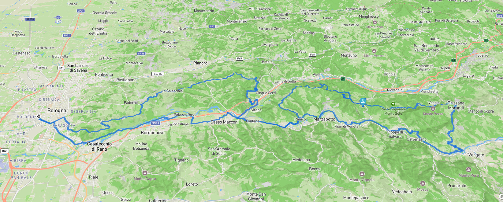
En rentrant chez moi, j’ai eu l’impression d’avoir changé mon rapport avec Bologne. Un peu comme lorsqu’une personne cesse d’être une simple connaissance pour devenir un·e ami·e après avoir partagé quelque chose de personnel. Comme si, moi aussi, je pouvais lui faire confiance. Bologne me semblait plus belle, plus courageuse, plus inspirante. Et moi plus chanceux d’être ici pour continuer à la découvrir.